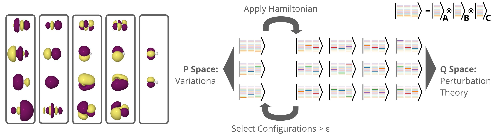
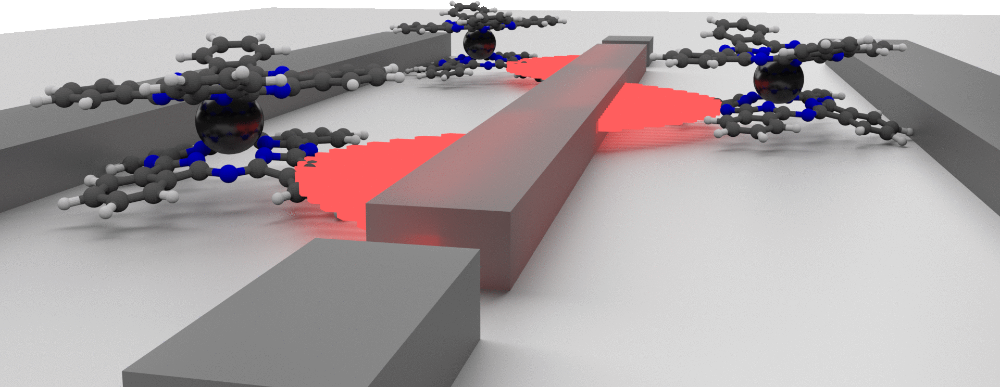
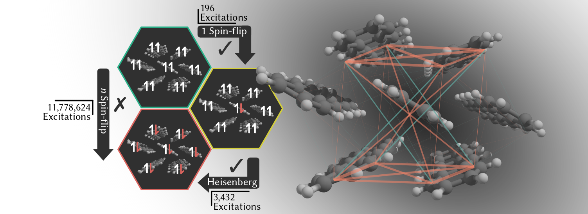
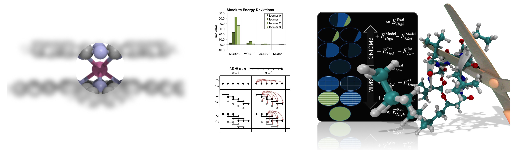

Research Projects
Critical problems in all areas of chemistry benefit from a microscopic understanding of structure and mechanism.
Computational chemistry provides an exceptionally detail-rich glance into the inner workings of molecular events.
Our research activities focus primarily on the development of novel quantum chemistry methods and the application
of these methods to investigate the chemical foundations of renewable energy sources and quantum technologies.

Quantum Algorithms for Chemistry
Quantum computing offers the exciting possibility of side-stepping the exponential scaling associated with simulating chemistry systems at the quantum level.
However, in order to achieve this, new algorithms which can run on quantum devices need to be developed and tested.
We are working on developing adaptive quantum algorithms, specifically focused on realizing improved molecular simulations on quantum hardware.

Tensor product wavefunction approximations
We work on developing new tools to
efficiently model systems containing strongly correlated electrons.
One approach to this problem is to consider tensor decompositions as a way to decrease the complexity of representing strongly correlated systems.
In an initial study, we have developed a strategy based on the Tucker decomposition
to approximate a system of semi-separable clusters in a quickly converging series of n-body terms.

Fock-space CI methods
Entangled electrons in molecular magnets, strongly correlated transition metal catalysts,
many of our most important problems are not easily modelled with conventional quantum chemistry.
We have an ongoing interest in the use of the spin-flip framework (pioneered by Anna Krylov at USC) for describing several
types of strongly correlated systems within a single reference formalism.

Materials for Qubits
Unlike in traditional (classical) computing where the devices are largely determined by material properties,
the small sizes of quantum bits, means that the device performance will be determined by both material and molecular properties.
We are interested in developing methods and running simulations for understanding which chemical characteristics (and to what extent) affect the performance of single molecule magnets for quantum information purposes.

Excited states in molecular materials
We work on developing computational techniques to understand the detailed structure and mechanisms which
characterize such photoactive molecular materials, in an effort to design new materials
with tailored photophysics.
In one recent approach, we have used single-excitation wavefunctions (low-cost)
to characterize multiexcitons in organic chromophore clusters. This approach works by establishing a one-to-one relationship between the elements
of a Bloch-effective Hamiltonian obtained from one spin-flip calculations and a simple Heisenberg spin lattice.

Efficient calculations of large molecules
Accurate quantum chemistry is difficult to apply to large molecules because the
calculations quickly become too computationally demanding.
Approaches to solve this problem can often be divided into two categories:
Local orbital methods and Fragment-based methods.
Local orbital methods are more rigorous and have better error management,
but can be much more complicated and are often slow to crossover (become
faster than conventional calculations).
Fragment-based methods are much more simple, and can lead to quite accurate results,
without the complexity overhead required to rewrite electron correlation methods
like CCSD(T). However, these methods rely more on heuristics than well-controlled approximations,
and thus error management is more of a problem.
We have had an interest in these fragment-based approaches for some time. Two of our methods are described in the following papers:
MIM, and
MOB.